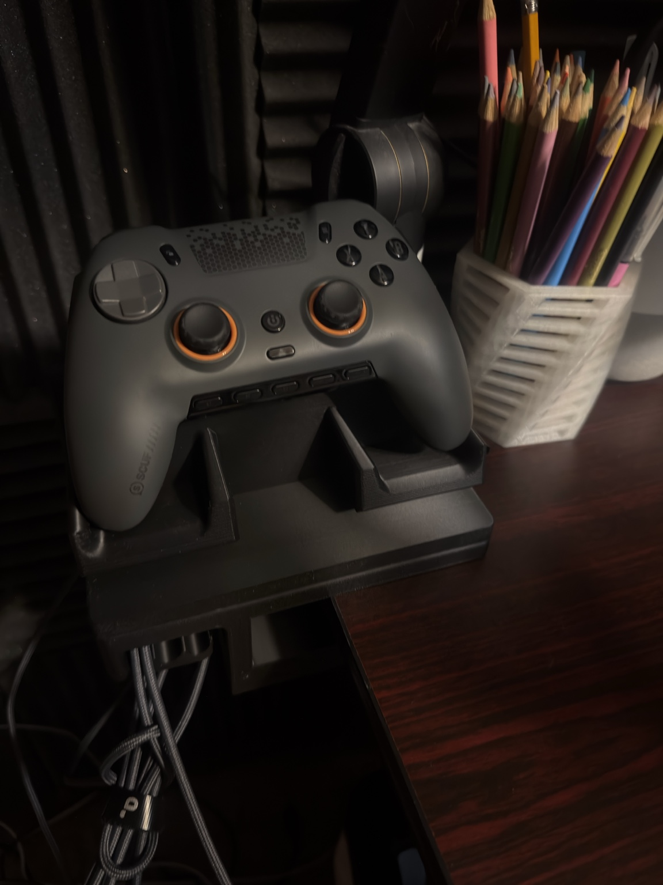
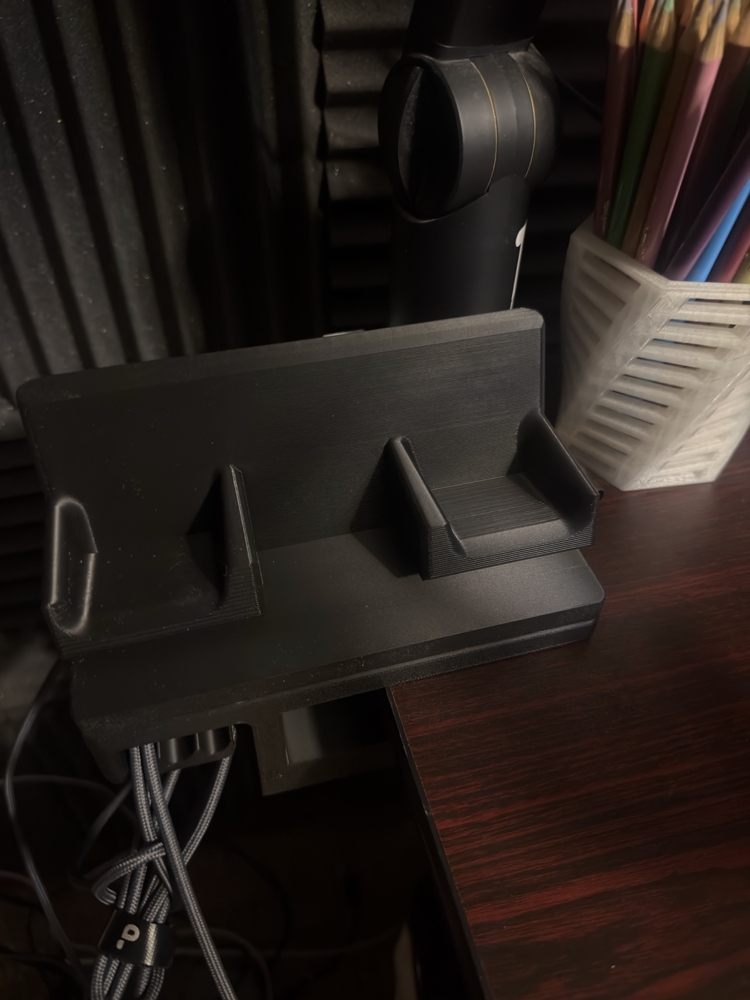
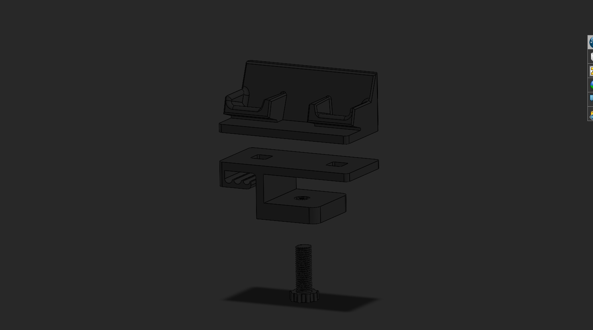
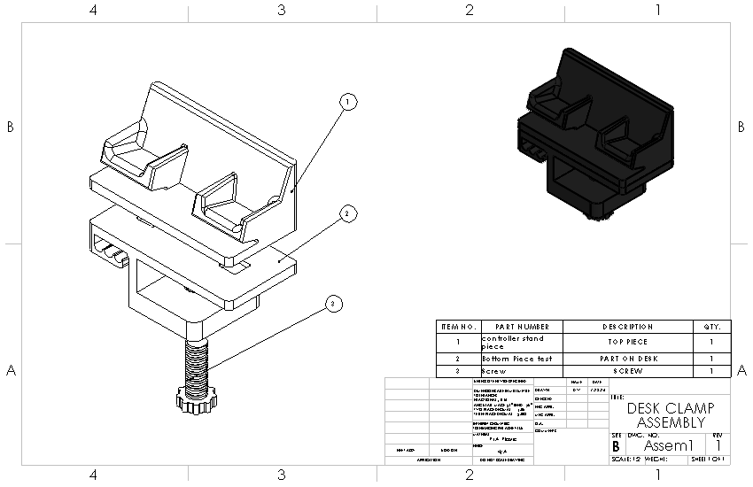
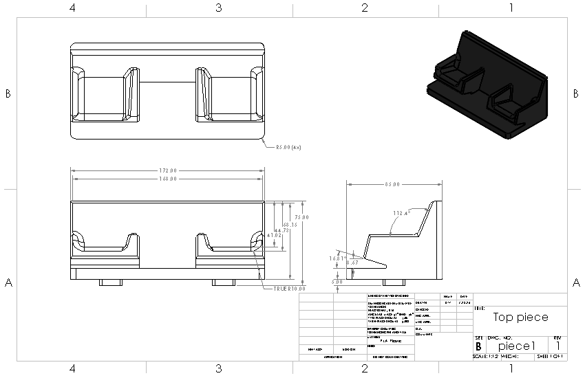

Project Portfolio
Finished designs, CAD models, engineering drawings, design iterations, and mechanical problem-solving work.
Adjustable Desk Clamp Dock
A modular, 3D-printed controller dock designed in SOLIDWORKS to clamp onto the side of a desk, reduce desktop clutter, and keep charging cables organized.
The design separates the desk clamp base from the top controller holder so future attachments can be redesigned and reprinted without remaking the entire clamp assembly.

What, How, Results
I wanted a dedicated place to store my controller without adding more clutter on top of my desk. The dock needed to mount off the desk edge, hold the controller securely, and help route charging cables.
I modeled a clamp base, printed screw, cable-routing slots, and removable top holder in SOLIDWORKS. The top piece snaps into the base so the holder can be redesigned later without reprinting the full clamp.
The finished dock clamps to the desk, holds the controller in a consistent location, and keeps charging cables hanging to the side. The modular top also leaves room for future attachment designs.
Iteration and fabrication choices
The bottom clamp was designed around a straightforward desk-edge mount with printed cable slots. Most of the iteration focused on the top controller holder: spacing, support angle, and how loosely or tightly the controller should sit in the dock.
I originally explored a more exact controller-shaped cradle, but simplified the holder after realizing a cleaner open design would print more reliably and be easier to revise later.
The full assembly was printed in black PLA. The screw and threaded load areas used stronger infill settings because those parts take the most clamping force and wear. The main body pieces used lighter infill to keep the print efficient while still being strong enough for desk use.
Total print time was about 12 hours, with the full idea-to-finished-print process taking roughly three days.
CAD, Drawings, and Printed Result




Additional Projects Coming Next
Newest projects will stay at the top of this page as more CAD, drawing, and fabrication work is added.
3D models, assemblies, and visualizations from coursework and independent design practice.
Technical drawings, dimensions, drafting practice, and documentation for design work.
Sketches, iterations, fabrication notes, and lessons learned from future mechanical design projects.